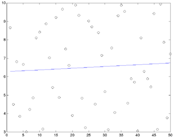

Interactive Mode
|
MINUIT has 2 distinct running modes...one is 'configureation-file' based (or
interactive) the other is 'functional' based (specific function calls from your
program).
INTERACTIVE MODE:: this mode, you define 'fcn', as above, and simply
call ONE MINUIT function called 'MINUIT' in you main...this will then prompt
you for a command, or you can pipe in a file into its stdin...and example is
given below for fitting a line to RANDOM data in this mode...using this input
set of commands
-----------------
set title
test fitting a line with random data
parameters
1 'm' 1 1 0 0
2 'b' 1 1 0 0
minimize 3000
hesse
return
------------------
Both the data is printed to the file, and the fitted params are printed to console
(via MINUIT)

|
#include "blochlib.h"
#include "minuit/minuit.h"
//need to use the proper namespaces
using namespace BlochLib;
using namespace std;
/*
//A simple example on the Interactive mode of the fitting function "MINUIT"
//here we fit a line to random data (generated on the fly)
//There is a 'fitting file' that MINUIT needs for the input called
//'intomin.min'
//in this directory that you will need to input pipe into stdin via
//"<progname> <query options> < intomin.min"
//here the '<query options>' are the options that the
//C++ part of the program asks you for upon start up
*/
//a line...
double lineFunc(double m, double b, double x)
{ return m*x+b; }
//the master MINUIT function
void fcn (int npar, double* grad, double* fcnval, double* xval, int iflag, void* futil)
{
//a random number generator will generate from 3 to 10
static Random<UniformRandom<> > myR(3,10);
//the data vector declared static to be same at every 'fcn' call
static Vector<double> data(50);
static Range All(Range::Start, Range::End);
//In interactive mode, the "iflag" will go between 1--4
// if ifgal==1, then it signifies the first time fcn was called,
// and so we should initalize out data
if(iflag==1){
data.apply(myR, All); //fill the vector with a bunch of random numbers
}
//if the 'iflag' is not 1 or 3, then we will do what we always
// do, that is to calculate 'chi-square' or fill out 'fcnval'
// here we take x=1...50 as out independant var
*fcnval=0;
for(int i=0;i<data.size();++i) *fcnval+=pow(lineFunc(xval[0], xval[1], i)-data[i], 2.0);
*fcnval=std::sqrt(*fcnval);
//if 'iflag' is 3, then it signifies the LAST call, and you shold do all
// our data outputting and clean up
if(iflag==3){ //here we are just going to dump out to a matlab file
std::ofstream oo("fitdat.m");
oo<<"vdat=["<<data<<"];"<<std::endl;
oo<<"m="<<xval[0]<<";"<<std::endl;
oo<<"b="<<xval[1]<<";"<<std::endl;
oo<<"rr=1:"<<data.size()<<";"<<std::endl;
oo<<"fitted=rr*m+b;"<<std::endl;
oo<<"plot(rr, vdat, 'ko', rr, fitted, 'b-');"<<std::endl;
}
}
int main(int argc, char *argv)
{
//simply call the interactive mode minuit
//'minuitfcn' is the master wrapper between
// the fortran function and C++/C function 'fcn' above
//The second PArameter would be 'futil' in the above 'fcn'
// if we needed one
MINUIT(minuitfcn, NULL);
}
|